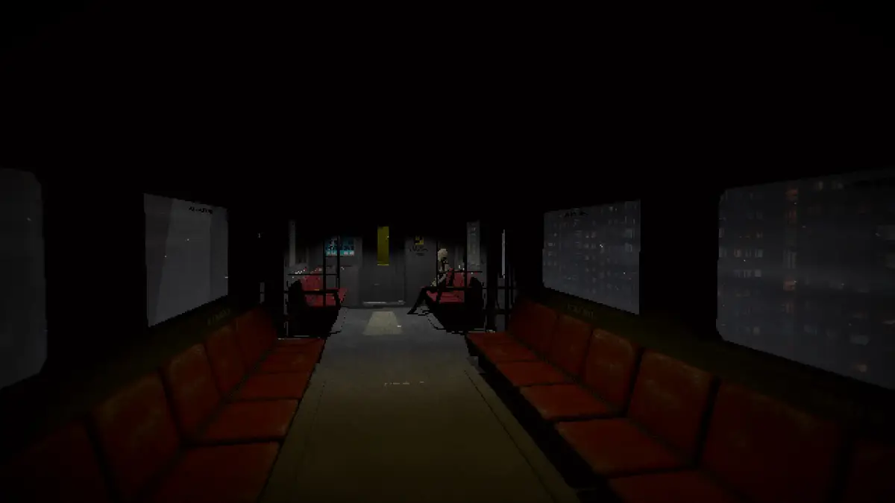
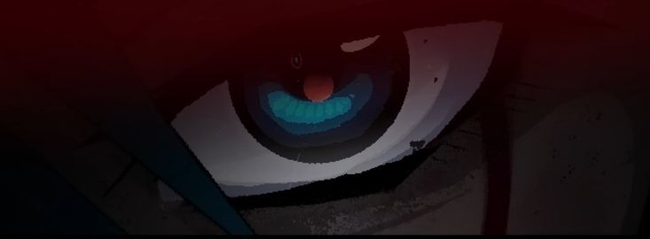

SIGNALIS
Signalis fue mi introducción al mundo de los survival horror.

Es un juego con una historia ambigua y con una ambientación igual de magnifica que sus antecesores.
Tiene unos visuales maravillosos con cinematicas repentinas que te ponen a experimentar en primera persona el juego.
Sus visuales se asemejan a los de sus predecesores con imagenes similares a lo que verías en un juego de PS2.
El menú inicial tiene algo muy curioso, y es que el ojo que aparece al seleccionar alguna de las configuraciones sigue tu puntero.
Es un efecto que puede ser escalofriante para algunos, a mí me parece una inclusión genial.
